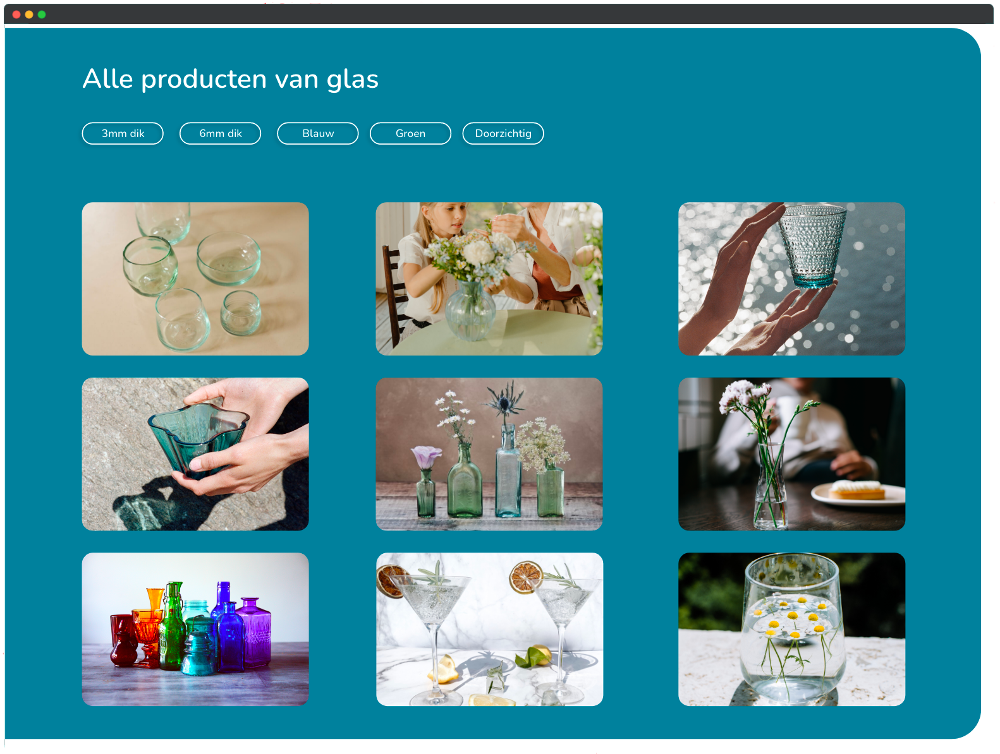

Homecycle
Voor het vak grid en kleur was de opdracht om een website voor producten te ontwerpen met als thema duurzaamheid. Dit begrip is erg breed, dus heb ik ervoor gekozen om mij te focussen op een onderliggend thema, namelijk recyclen. Voor dit vak heb ik eerst uitgebreid onderzoek gedaan naar kleur, verschillende vormen van navigatie en hoe je producten het beste kan filteren en sorteren.
Design
- 
Het ontwerp van mijn website bestaat uit een homepage die uitleg geeft over de 4 meest voorkomende stoffen die gerecycled kunnen worden. Omdat ik graag de nadruk wilde leggen op deze stoffen heb ik voor elk van deze ook weer een eigen categorie pagina ontworpen die vervolgens weer leiden naar de subcategorie pagina die weer leid naar de detailpagina van de producten die gemaakt kunnen worden van die stof. Ik in het ontwerp vooral geëxperimenteerd met de navigatie en de filter functies op de pagina. Zo heb ik ervoor gekozen om de navigatie op de detailpagina's en subcategorieën deels verticaal te plaatsen en de filter om te bouwen to knoppen op de categorie en subcategorie pagina's.